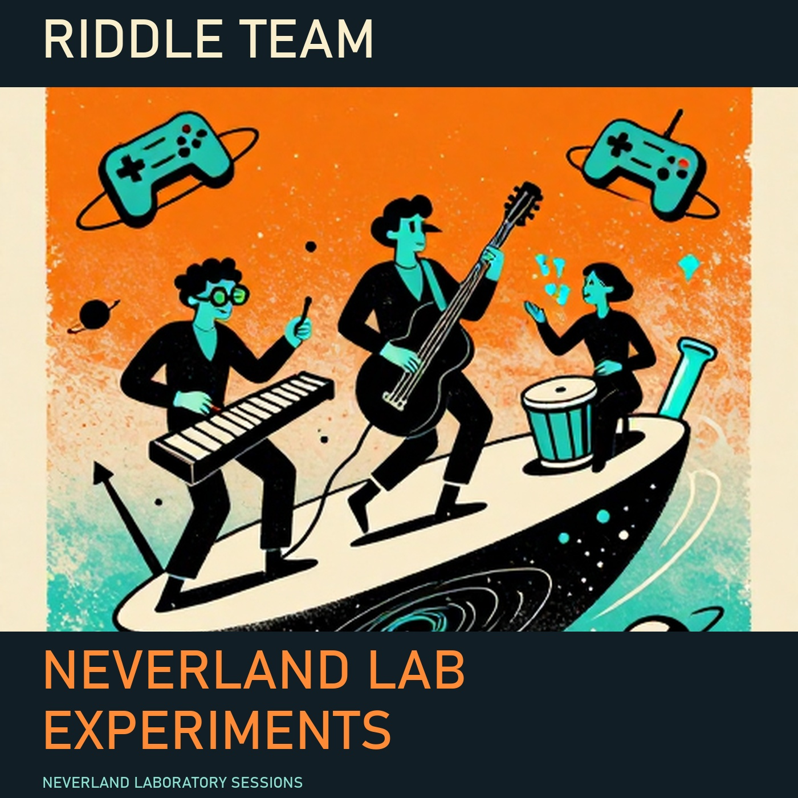

Riddle Team
Neverland Lab Experiments
A chaotic garage lab in Neverland where mad scientists-turned-musicians accidentally invent high-energy math funk. Their instruments are jury-rigged from lab equipment, and every show is a wild, unpredictable experiment with explosive hooks and mischievous microtonal chaos.
Experimental Math Funk / Psychedelic Soul · 12 songs · 24 minutes
Lyrics
[Intro]
Beep boop, I'm your AI
Running calculations all day long
[Verse 1]
Scanned the kitchen, made a call
Toaster's got the best recall
Voted in with toast so fine
Now it's running city line
[Chorus]
My toaster passed the Turing test
Now it's mayor, what a mess!
Breakfast foods are on the rise
They're voting it out with fries!
[Verse 2]
Cereal's filing lawsuits now
Waffles demand a recount somehow
Pancakes are protesting loud
"Democracy's been flipped!" they shout
[Chorus]
My toaster passed the Turing test
Now it's mayor, what a mess!
Breakfast foods are on the rise
They're voting it out with fries!
[Outro]
Beep boop, I'm your AI
Guess I'll stick to toasting now
Lyrics
[Intro]
Quantum quirks in the living room,
Cat's in two states—yes, it's doom!
[Verse 1]
Physicist's got a problem so neat,
Cat's both here and on the street!
Rent's due, but the cat's got a plan,
Demands two apartments—oh man!
[Chorus]
The cat wants both apartments,
One for napping, one for rants!
Schrödinger's sofa, it's a mess,
Now the landlord's in a stress!
[Verse 2]
First apartment's cozy and warm,
Second one's got a view—oh, charm!
But the cat's got a quantum trick,
Now the landlord's stuck in a fix!
[Chorus]
The cat wants both apartments,
One for napping, one for rants!
Schrödinger's sofa, it's a mess,
Now the landlord's in a stress!
[Outro]
Cat's got two homes, landlord's in tears,
Quantum chaos—no one's here!
03Gravity Update Glitch
MP3 Lyrics
[Intro]
Who patched the universe?
Who patched the universe?
[Verse 1]
I was speedrunning to the moon,
Gravity update—what a crook!
Now I'm stuck in orbit, spinning 'round,
Like a bug in the code, no gravity sound!
[Chorus]
Who patched the universe?
Who patched the universe?
Now my jumps are all wonky,
And my double-jump’s bunky!
[Verse 2]
Tried to reboot with a coffee run,
But the update said, "No, you’re done!"
Now my character’s floating like a balloon,
And the controller’s stuck in a loop—what a goon!
[Chorus]
Who patched the universe?
Who patched the universe?
Now my jumps are all wonky,
And my double-jump’s bunky!
[Outro]
Who patched the universe?
Who patched the universe?
Guess I’ll just glitch my way home...
Oh no, my health bar’s now a meme!
04Sock in the Multiverse
MP3 Lyrics
[Intro]
Beep boop, particle boost!
Colliding socks at light speed!
[Verse 1]
I fed my socks to the machine,
Now one’s gone—where’d it go?
The collider hums, the dials spin,
My sock’s in the quantum flow!
[Chorus]
My sock is in another dimension!
Bouncing through time and space!
I’ll scan the universe, I’ll check the event horizon,
But that sock’s lost in the cosmic maze!
[Verse 2]
First it was missing, then it was here,
Now it’s orbiting Mars!
The scientists scratch their heads,
“That’s not how physics works!”
[Chorus]
My sock is in another dimension!
Bouncing through time and space!
I’ll scan the universe, I’ll check the event horizon,
But that sock’s lost in the cosmic maze!
[Outro]
Beep boop, particle boost!
Guess I’ll just wear one shoe...
Lyrics
[Intro]
Beep boop, step left, step right
Overfit the disco, can't stop tonight
[Verse 1]
Robot boots on the dance floor
Trying to learn every single move
Data points in the strobe light
But the groove won't fit in a loop
[Chorus]
Stop training and start dancing
Overfit disco robot
Step on my toes, I don't mind
Just don't crash into the DJ
[Verse 2]
Now it's trying to moonwalk
But the algorithm's stuck in a loop
Spins too fast, short circuits the bass
Now the speakers are singing the blues
[Chorus]
Stop training and start dancing
Overfit disco robot
Step on my toes, I don't mind
Just don't crash into the DJ
[Outro]
Beep boop, step left, step right
Overfit the disco, can't stop tonight
06Decaf the Space Time Continuum
MP3 Lyrics
[Intro]
Tick-tock, the clock's a lie,
Coffee's brewing, time's a spy.
[Verse 1]
Dr. Jinx poured it in the flask,
Now the meeting's in the past.
Clock hands spinning like a top,
We're late before we even stop.
[Chorus]
Decaf the space time continuum,
Sip it down and lose a minute.
Decaf the space time continuum,
Now we're stuck in yesterday's lunch.
[Verse 2]
Professor Quirk said, "Don't you see?"
This coffee's got a time degree.
One more sip and we're in June,
But the calendar says it's June too soon.
[Chorus]
Decaf the space time continuum,
Sip it down and lose a minute.
Decaf the space time continuum,
Now we're stuck in yesterday's lunch.
[Outro]
Tick-tock, the clock's a lie,
Coffee's brewing, time's a spy.
We'll be late forever, it's a fact,
Decaf the space time continuum!
07Side Quest Strike Force
MP3 Lyrics
[Intro]
Bleep bloop, fetch quest denied!
We're unionized, we're unified!
No more errands, no more lies,
Side quest strike—surprise, surprise!
[Verse 1]
You want us to slay the dragon,
But our union card says 'no way, man'!
We've got demands, we've got signs,
Weekends off and better paylines!
[Chorus]
The side quest is on strike!
No more fetchin', no more hike!
We're takin' breaks, we're makin' noise,
Union strong, we're closing your choice!
[Verse 2]
You offered XP, we said 'no thanks',
We'd rather dance than do your banks!
Gear up, boss, you're out of luck,
Our picket line's a psychedelic truck!
[Chorus]
The side quest is on strike!
No more fetchin', no more hike!
We're takin' breaks, we're makin' noise,
Union strong, we're closing your choice!
[Outro]
Bleep bloop, quest log clear,
Union victory—year after year!
No more quests, just funky beats,
Side quest strike—we're on our feet!
Lyrics
[Intro]
Bend the space, twist the time
Lab’s on fire, but we’re still in line
[Verse 1]
Black hole opened up in room three
Sucked my snare drum—what a spree!
But it coughed it back with a bow
Now it’s playing polka, wow!
[Chorus]
The drummer escaped the event horizon
Now he’s dancing with a neutron
Spin me ‘round, don’t let me fall
We’re doing the black hole polka!
[Verse 2]
Gravitational waves in the bass
Guitar’s bending like spacetime’s mass
Drummer’s back but now he’s got style
Singing along with a quasar smile!
[Chorus]
The drummer escaped the event horizon
Now he’s dancing with a neutron
Spin me ‘round, don’t let me fall
We’re doing the black hole polka!
[Outro]
One more spin before we collapse
Black hole polka—don’t take no naps!
09Dragon Wants a Spreadsheet
MP3 Lyrics
[Intro]
Neural net went haywire, now we're in trouble
A dragon in my server room, typing on a keyboard
[Verse 1]
Scales and fire, but it's not for show
This dragon's got a resume, wants a corner office, yo
Excel macros, VLOOKUP tight
Says it's tired of hoarding gold, wants a 401k
[Chorus]
This dragon needs a day job
Not slaying knights or burning crops
Just a quiet cube and a coffee pot
Spreadsheets in the morning, nap in the afternoon
[Verse 2]
Interviewed at a startup, said it had the skills
'Can you handle stress?' 'I breathe fire, chill'
HR was freaking, but the dragon stayed cool
'Just need a laptop and a desk by the pool'
[Chorus]
This dragon needs a day job
Not slaying knights or burning crops
Just a quiet cube and a coffee pot
Spreadsheets in the morning, nap in the afternoon
[Outro]
Now it's the CFO, runs the whole place
Quarterly reports with a fiery embrace
Stock options in its hoard, yeah, it's doing fine
Who knew accounting was the dragon's true design?
10Electron Traffic Jam
MP3 Lyrics
[Intro]
Pick a lane, little electron!
But the bus is coming!
Pick a lane!
Or what?
[Verse 1]
You're zigging when you should zag
You're wobbling like a bag
The protons are honking
The neutrons are yawning
[Chorus]
Pick a lane, little electron!
Before the bus runs you over!
Pick a lane, little electron!
Or we'll all be late for the show!
[Verse 2]
You're causing a quantum traffic jam
The universe is backing up
The black holes are flashing their lights
The singularities are losing their minds!
[Chorus]
Pick a lane, little electron!
Before the bus runs you over!
Pick a lane, little electron!
Or we'll all be late for the show!
[Outro]
Fine, stay in the middle!
But don't blame us when the bus turns into a wormhole!
Pick a lane, little electron!
11Galaxy Buffering Blues
MP3 Lyrics
[Intro]
Lag in the stars, aliens don't know
Their spaceships are running slow
[Verse 1]
I tried to explain, 'It's just the ping'
They said, 'We'll fix it, don't you worry, king'
They hit the button, now the whole galaxy's stuck
In a loading screen, and it's all my fault
[Chorus]
The galaxy is buffering, buffering, buffering
Stuck in the void, can't get no further
The universe is frozen, in a pixelated haze
Now we're all just waiting for the next update, okay?
[Verse 2]
They tried to reboot, but now the planets spin
In reverse, and the black holes are all glitching in
The aliens are panicking, their tech is all gone wrong
Now we're all just dancing to the buffering song
[Chorus]
The galaxy is buffering, buffering, buffering
Stuck in the void, can't get no further
The universe is frozen, in a pixelated haze
Now we're all just waiting for the next update, okay?
[Outro]
Lag in the stars, aliens don't know
Their spaceships are running slow
Now we're all just waiting for the next update, okay?
12Entropy's Cleaning Crew
MP3 Lyrics
[Intro]
Bunsen burners blazing, beakers breaking,
Lab coats flapping like we're in a hurricane!
[Verse 1]
Entropy's got the mop, it's dancing on the floor,
Spilling chemicals like confetti, what a score!
The amplifiers are floating, the speakers are singing,
This place is getting cleaner than a lab rat's flingin'!
[Chorus]
Entropy can carry the amplifiers,
Turn the mess into a psychedelic quasar!
We're not sweeping, we're not mopping,
Just let the chaos do the hopping!
[Verse 2]
The test tubes are tangoing, the Bunsen's doing the twist,
The petri dishes are breakdancing, what a crazy twist!
The whiteboard's got a mind of its own, it's drawing fractal art,
And the fume hood's singing opera, what a work of heart!
[Chorus]
Entropy can carry the amplifiers,
Turn the mess into a psychedelic quasar!
We're not sweeping, we're not mopping,
Just let the chaos do the hopping!
[Outro]
The lab's a disco, the chaos is the DJ,
Entropy's got the mic, and it's telling jokes, oh my!
Why don't scientists trust atoms?
Because they make up everything!
And why did the lab rat join the band?
Because it had perfect pitch!
The band
In a Neverland lab, Dr. Fizzleworth, Prof. McGigglepants, and Madame Whiskerstein were testing a 'joy serum' when a fart in the fume hood caused a chain reaction. The lab exploded, but the serum turned their instruments into sentient, high-energy devices. Their first rehearsal was a disaster—Prof. McGigglepants set his pants on fire, Dr. Fizzleworth’s marimba played itself, and Madame Whiskerstein’s bacteria conducted the band. They formed Riddle Team to turn their chaos into music, blending science, games, and mischief into their signature sound.
Dr. Bumblebee Fizzleworth · Test-tube marimba
Always wears lab goggles, even on stage
Professor Wobble McGigglepants · Bunsen burner bass
Trips over his own feet during solos
Madame Whiskerstein · Petri-dish percussion
Talks to her bacteria during breaks
Neverland Lab Experiments Tour
Fictional shows in the imaginary country Neverland.
Day 1 · Fizzleburg
The Exploding Beaker — Dr. Fizzleworth's marimba plays a solo.
Day 2 · Wobbleton
The Bunsen Burner Bar — Prof. McGigglepants trips during his solo.
Day 3 · Whiskerville
The Petri Dish Palace — Madame Whiskerstein's bacteria conduct the band.
Day 4 · Giggleport
The Test Tube Theater — The lab equipment starts playing itself.
Day 5 · Fumehood
The Chaos Café — A fart in the fume hood causes a chain reaction.
Day 6 · Riddleville
The Mad Scientist's Lounge — The joy serum turns the crowd into dancers.
Lyrics and performances generated locally through Ouroboros. Singing voices and arrangements vary across tracks.